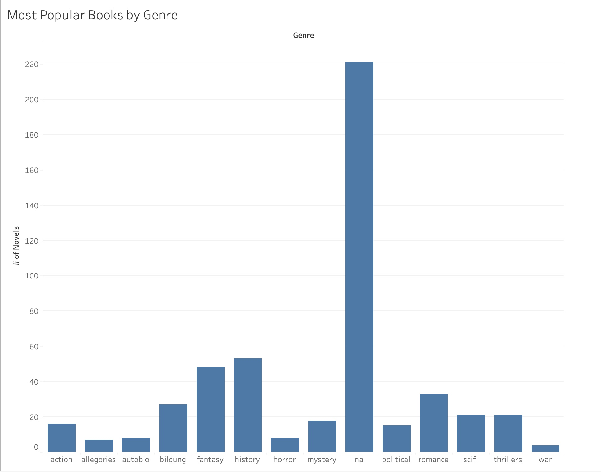
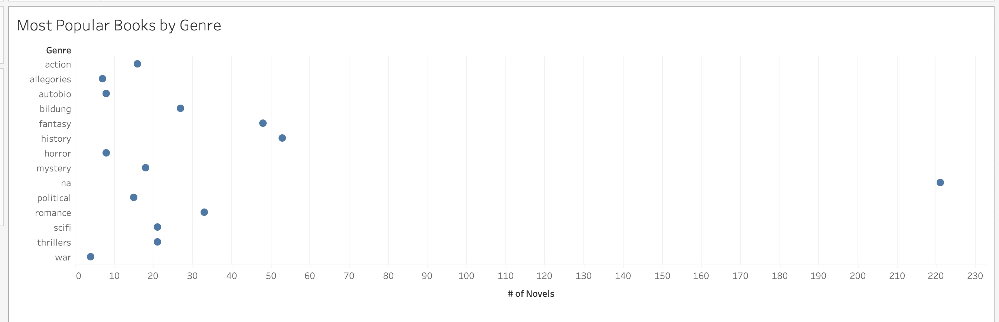

← Back to Home
A2 - Introduction to P5.js
Dataset:
Top 500 Novels Metadata
Variable Visualized:
Genre (count of books per genre)
Data Source:
CSV file loaded from
data/novels.csv
P5.js Visualizations
Bar Chart - Books by Genre
Dot Plot - Books by Genre
Tableau Visualizations
Bar Chart (Tableau)

Dot Plot (Tableau)
